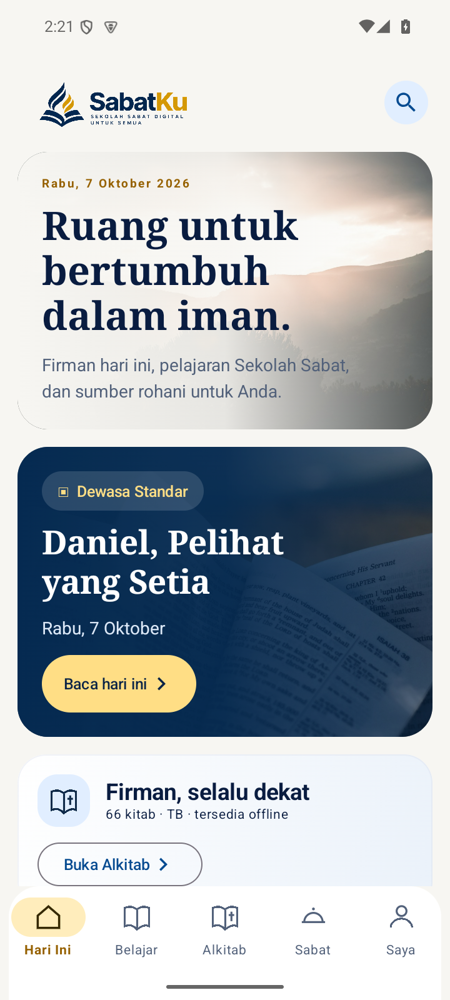
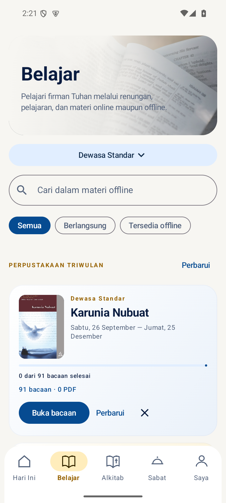
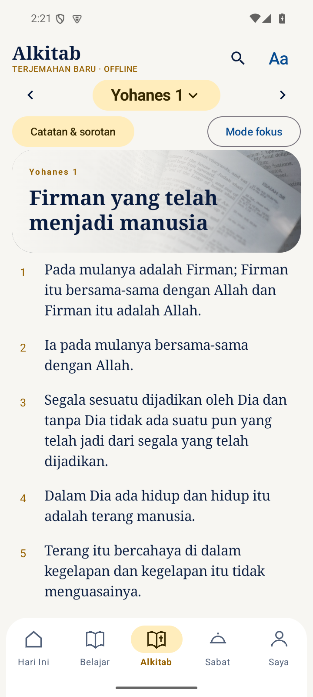

Bangun ritme membaca
Buka Renungan dan Bacaan Alkitab Se-Dunia satu Pasal Sehari. Pilih tanggal untuk melihat bacaan sebelumnya atau mempersiapkan hari mendatang.
Temukan bacaan AndaBACA. RENUNGKAN. BERTUMBUH.
Satu ruang untuk belajar Sekolah Sabat, membaca Alkitab, dan menyiapkan pelayanan. Simpan bacaan, tulis refleksi, lalu lanjutkan perjalanan iman Anda—bahkan saat sedang offline.
Versi 1.0.4 (26) · Pengujian tertutup Google Play · Android 8.0 ke atas
Pengujian tertutup tersedia di Indonesia untuk akun Google yang telah diundang dan bergabung. Penguji baru bisa gabung grup WhatsApp SabatKu.

DEKAT DENGAN KESEHARIAN ANDA
Dari waktu teduh pagi hingga persiapan Sabat, mulai dari bacaan yang Anda butuhkan.
Buka Renungan dan Bacaan Alkitab Se-Dunia satu Pasal Sehari. Pilih tanggal untuk melihat bacaan sebelumnya atau mempersiapkan hari mendatang.
Temukan bacaan AndaPelajari materi sesuai kelas, buka rujukan Alkitab, dan simpan jawaban atau catatan pribadi untuk diskusi Sekolah Sabat.
Jelajahi alat belajarTemukan bacaan misi dan persembahan untuk Sabat mendatang, lihat agenda gereja, lalu atur pengingat Sabat sesuai lokasi.
Kenali fitur pelayananKENALI SABATKU
Dari belajar pribadi hingga persiapan Sekolah Sabat dan pelayanan jemaat, temukan bacaan serta alat yang membantu Anda dalam satu aplikasi Android.
Bawa 66 kitab Alkitab dalam bahasa Indonesia dan Inggris untuk membaca serta mendalami Firman di mana saja.
Ikuti pelajaran harian dengan pilihan program untuk dewasa, pemuda, dan anak sesuai edisi yang tersedia.
Siapkan diskusi dan pengajaran dengan bacaan tambahan yang terhubung ke pelajaran.
Cornerstone dan Real-Time Faith menghadirkan kegiatan belajar yang bisa Anda kerjakan langsung di aplikasi.
Bangun kebiasaan membaca setiap hari dengan tampilan yang dapat disesuaikan.
Lihat waktu mulai dan berakhirnya Sabat berdasarkan lokasi yang dipilih.
Temukan bacaan untuk pertumbuhan pribadi dan kebutuhan pelayanan di dalam aplikasi.
Mulai dari satu dasbor untuk mengikuti bacaan terjadwal maupun edisi Pekan Doa tahunan.
Lihat agenda gereja yang berlangsung maupun mendatang dan simpan bahan resmi di perangkat.
Pusat info pembaruan terpisah dari halaman pengaturan yang ringkas dan mudah dicari.
Gabung ke grup WhatsApp SabatKu untuk meminta akses pengujian, melaporkan kendala, dan mengikuti kabar rilis berikutnya.
RIWAYAT PERUBAHAN
Lihat fitur dan penyempurnaan yang hadir di versi terbaru.
Build 25 membawa fitur yang sama dengan build internal 24 dan tersedia untuk penguji tertutup di Indonesia.
Buka SabatKu di Google PlayPenguji terdaftar mulai memasang dan memperbarui SabatKu melalui Play Store menggunakan identitas aplikasi final id.sabatku.app. Laporan pemilih akun Google dari rilis ini ditangani pada versi 1.0.1.
Petunjuk pembaruan ini berlaku untuk sesama versi beta GitHub. Untuk beralih ke Google Play, ikuti panduan pengujian di halaman ini.
Lihat catatan beta di GitHubPasang pembaruan tanpa menghapus aplikasi untuk mempertahankan data lokal.
Lihat catatan beta di GitHubPasang pembaruan tanpa menghapus aplikasi untuk mempertahankan data lokal. Perbarui katalog materi untuk menerima bacaan terbaru.
Lihat catatan beta di GitHubBeta untuk tester · Android 8.0 ke atas.
Lihat catatan beta di GitHubBeta untuk tester · Android 8.0 ke atas. Audio Primary memerlukan internet; jika sumber lagu gagal, buka daftar lagu resmi dari kartu pemutar.
Lihat catatan beta13Beta untuk tester · Android 8.0 ke atas. Pasang di atas versi beta sebelumnya untuk memperbarui aplikasi.
Lihat catatan beta di GitHubBeta untuk tester. Tampilan dan pemutaran audio terbaru masih memerlukan pengujian pada HP; izin dan penghematan daya Android dapat memengaruhi pengingat.
Lihat catatan beta di GitHubBeta01 adalah pra-rilis awal yang memperkenalkan ekosistem aplikasi SabatKu kepada publik. Beta01 tidak memiliki GitHub Release resmi; ringkasan berikut mencakup fitur yang berkembang sepanjang beta02–beta07.
Catatan ini bersifat retrospektif: tidak ada halaman rilis atau APK beta01 resmi di GitHub. Ini merangkum perjalanan fitur hingga beta07.
PENGALAMAN YANG TENANG
Tampilan bersih, bacaan yang nyaman, dan alat belajar yang membantu Anda fokus pada hal yang penting.
Kenali perjalanan SabatKu

PENGUJIAN SABATKU DI GOOGLE PLAY
SabatKu 1.0.4 (26) tersedia melalui pengujian tertutup di Indonesia. Gunakan HP Android 8.0 atau lebih baru dan akun Google yang didaftarkan sebagai penguji.
Jika belum terdaftar, gabung grup SabatKu dan hubungi admin secara pribadi dengan email akun Google yang aktif di Play Store HP Anda. Penguji awal diundang memakai email yang digunakan saat masuk ke SabatKu beta. Jika sudah diundang, langsung ke langkah 2.
Buka tautan undangan pengujian tertutup dari admin WhatsApp dengan akun Google yang terdaftar, lalu pilih Jadi penguji. Penguji internal juga perlu bergabung di jalur tertutup.
Setelah bergabung, buka halaman SabatKu di Google Play lalu ketuk Instal atau Perbarui. Jika berpindah dari beta APK GitHub, versi Play dapat terpasang sebagai aplikasi terpisah. Buat cadangan atau sinkronkan progres di versi lama terlebih dahulu. Periksa data yang dibutuhkan di versi Play sebelum menghapus beta lama.
Buka Lanjutkan dengan Google dan pastikan pemilih akun muncul serta login berhasil. Coba juga pilihan kelas, bacaan hari ini, unduhan dan bacaan offline, serta pengingat. Kirim hasil lewat grup dengan versi aplikasi, model HP, versi Android, dan langkah yang Anda lakukan. Samarkan data pribadi pada tangkapan layar.
SEBELUM ANDA MULAI
Alkitab TB dan KJV tersedia offline. Pelajaran, renungan, dan buku yang mendukung penyimpanan offline perlu diunduh terlebih dahulu. Internet tetap diperlukan untuk katalog, materi baru, sinkronisasi, dan pembaruan.
Ketersediaan mengikuti program, bahasa, triwulan, dan sumber penerbit. Pilih edisi yang tersedia di aplikasi; PDF dan materi pendamping dapat berbeda pada setiap edisi.
Pastikan akun aktif di Play Store dan di halaman undangan sama dengan akun yang didaftarkan admin. Jika belum terdaftar, hubungi admin melalui grup WhatsApp.
Buka halaman SabatKu di Google Play dengan akun yang sudah bergabung di pengujian tertutup, lalu ketuk Perbarui. Jika tombol belum muncul setelah rilis diumumkan, coba kembali beberapa menit lagi.
Periksa izin notifikasi, izin alarm, dan pengaturan baterai untuk SabatKu. Android dapat menunda pekerjaan latar belakang saat hemat daya aktif; popup pembaruan juga tersedia saat aplikasi dibuka.
Catat versi aplikasi, model HP, versi Android, serta langkah yang memunculkan masalah. Lalu gabung grup WhatsApp resmi SabatKu Mobile untuk berbagi masukan dan mengikuti perkembangan aplikasi.
DIBUAT UNTUK MENEMANI
Buka bacaan hari ini, simpan pemikiran Anda, dan bangun kebiasaan rohani langkah demi langkah.

SEKOLAH SABAT DIGITAL UNTUK SEMUA
Ikuti pengujian SabatKu di Google Play dan bantu kami mempersiapkan rilis publik.
Kembali ke atas